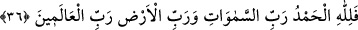
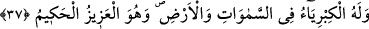

35. Bunun böyle olmasının sebebi şudur: Siz Allah’ın âyetlerini alaya aldınız,
dünya hayatı sizi aldattı. Artık bugün ateşten çıkarılmayacaklardır ve onların
(Allah’ı) hoşnut etmeleri de istenmeyecektir.
Bu azap “Böyledir, çünkü siz Allah’ın âyetlerini” düşünüp kabul ederek boyun
eğmediniz, “eğlence yaptınız; dünyâ hayâtı sizi aldattı.” Siz dünya hayatından başka
hayat olmadığını zannettiniz. “Artık bugün onlar ne ateşten çıkarılırlar ve ne de
kendilerinden Allah’ı memnun etmeğe çalışmaları istenir.”
Burada hitaptan gâibe dönmek, onları küçümseyerek hitap rütbesinden düştüklerini
bildirmek içindir. Yahut onları hitap makamından cehennemin derin karanlıklarına
nakletmek içindir. Yâni onlardan itâat edip rablerini razı ve memnun etmeleri istenmez.
Çünkü bunun vakti geçmiştir. Bu kavl-i ilâhîde şuna işâret edilmektedir; Allah Teâlâ
muhlis kullarına bazı âyetlerini izhar etti. İnkâr ehli her zamanki adetleri üzere onlarla
alay ettiler ve onları dünya hayatı aldattı. Çünkü onlar Allah Teâlâ’nın: “Dünya hayatı
sizi aldatmasın” (Lokman, 31/33) vasiyetini kabul etmediler. Artık bugün kahr-ı ilâhî
cehenneminden çıkarılmazlar. Zira onlar oraya hırs ve şehevât yoluyla girdiler.
Kendilerinden îmân ve amel-i salih yoluyla cennete geri dönmeleri de istenmez.
Cennetü’l-me’vâ’nın eyvânı üzerine şöyle yazılmıştır: “Her kim dünyanın işve ve
edâsını satın aldıysa vay onun başına!”
36. Hamd, göklerin Rabbi, yerin Rabbi bütün âlemlerin Rabbi olan Allah’a
mahsustur.
“Hamd, göklerin Rabbi, yerin Rabbi ve bütün âlemlerin”, ruhlar, cisimler, zatlar ve
sıfatlardan ibaret olan bütün âlemlerin “Rabbi olan Allah’a mahsustur.”
O’ndan başka hiç kimse, hamde hak kazanamaz. “Rab” kelimesinin tekrar edilmesi,
tekîd için ve Allah Teâlâ’nın bütün bu âlemlerin her birine olan rablığının asalet yoluyla
olduğunu bildirmek içindir.
37. Göklerde ve yerde azamet yalnız O’nundur. O, azîzdir, hakîmdir.
“Göklerde ve yerde ululuk”, azamet, kudret, saltanat ve izzet “yalnız O’na âiddir.”
Zira bunların eserleri göklerde ve yerde zâhir olmaktadır. “O, azîzdir”, hiç yenik
düşmez, “hakîmdir.” Her hüküm ve takdirinde hikmet sahibidir. Öyleyse O’na hamd
ediniz. Çünkü hamd O’na mahsustur. O’nu yüceltiniz, çünkü ululuk O’na mahsustur.